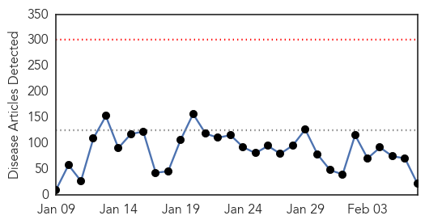
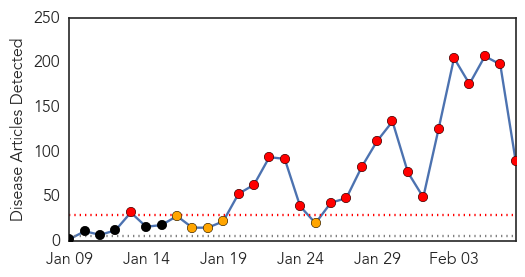
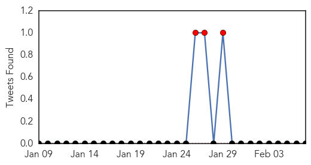
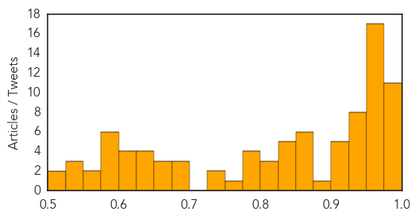

Ebola
30-Day Web Trend
0 alerts, 0 warnings

30-Day Twitter Trend
2 alerts, 0 warnings

Article Locations

Article Confidences

Top Articles:
- 1.000
- First Major Vaccine Trials In Liberia
- 0.999
- Guinea to expand use of experimental anti-Ebola drugs
- 0.999
- Ebola threatens economic gains in affected countries
- 0.997
- Dallas’ Ebola outbreak fed ‘epidemic of misunderstanding,’ SMU panel says
- 0.992
- Ebola Epidemic Takes a Toll on Sierra Leone's Surgeons
- 0.978
- Nearly 3,600 children orphaned by Ebola outbreak in West Africa - UNICEF -TRFN
- 0.963
- Sierra Leone: Interview: Senior UN relief official warns no room for complacency until Ebola is eliminated
- 0.951
- WHO updates clinical practices for Ebola treatment care
- 0.935
- Morristown doctor tells story of fighting Ebola
- 0.911
- Person in Dane County being monitored for possible Ebola symptoms
- 0.886
- West African Communities Receiving Ebola`s Orphans With Open Arms
- 0.878
- Bronte resident seeks funds for Ebola orphans
- 0.869
- Bronte resident seeks funds for Ebola orphans
- 0.854
- Guinea's Muslim clerics call for end to FGM to help stop Ebola - TRFN
- 0.836
- EU, African leaders to meet on Ebola March 3
- 0.711
- Hamile health post can’t handle suspected Ebola cases
- 0.660
- Inside The Fight To End Ebola
- 0.595
- China provides food aid to Ebola-hit Liberia - Headlines, features, photo and videos from ecns.cn
- 0.553
- Debunking vaccine junk science won't change people's minds. Here's what will.
- 0.531
- Mahama proposes cooperation against international crisis
- 0.519
- Acting Health Minister: Liberia stands to make global history if…
- 0.501
- President Sirleaf Meets Visiting AmeriCares President
Top Tweets:
- 0.916
- ebola isn't a chronic disease. It's an infection. People who contract it recover (system clears out virus) or die.
- 0.842
- 12 patients free of Ebola after receiving treatment run Ebola Treatment Unit (ETU) in Guinea,http://t.co/TgsAYs3Lxs
- 0.770
- Inside The Fight To End Ebola - Daily Beast http://t.co/kI07TASglu ebola EVD
- 0.770
- Inside The Fight To End Ebola - Daily Beast http://t.co/ipFwkWqrth ebola EVD
- 0.770
- Inside The Fight To End Ebola - Daily Beast http://t.co/Cs0oQXQ0a7 ebola EVD
- 0.734
- Doctor's notes: American Ebola survivor sees resilience among fellow survivors - CNN http://t.co/mc3sb0HQWP ebola EVD
- 0.686
- To Get To Zero Ebola Cases, It'll Cost A Lot: Roughly $1.5 Billion - NPR (blog) http://t.co/568HjVWpVu ebola EVD
- 0.592
- Ebola is the enemy. If we don't chase Ebola, it will kill us - Dr. Peter Clement, @WHO EbolaResponse http://t.co/mdrRpXMMnd
- 0.581
- Kenya @ Text ‘Stop Ebola’ to 7979 to donate 20 BOB to the war against Ebola. RT if you will. AfricaAgainstEbola
Measles
30-Day Web Trend
19 alerts, 5 warnings

30-Day Twitter Trend
5 alerts, 0 warnings

Article Locations

Article Confidences
Top Articles:
- 0.996
- Measles cases turn attention to bounty of childhood vaccines
- 0.996
- 5 Babies at Illinois Day Center Diagnosed With Measles
- 0.996
- More than measles: Childhood vaccines aimed at preventing many diseases
- 0.992
- Flu virus remains potent in Anderson; tuberculosis, pertussis return
- 0.988
- 1st case of measles confirmed in New Jersey — NewsWorks
- 0.985
- Pennsylvania, New Jersey medical care providers ramp up measles education efforts
- 0.979
- Connecticut escaping measles outbreak, so far
- 0.979
- Measles Outbreak What You Need to Know
- 0.978
- Upper Midwest flu cases slow, but bug still making the rounds
- 0.978
- Test results for suspected measles case in Jersey City could take 10 days
- 0.976
- Health officer says no scientific connection between vaccines and autism
- 0.973
- The return of measles
- 0.973
- Possible measles case reported in Montgomery County
- 0.972
- Montgomery County reports measles case
- 0.972
- Southland school officials wary of measles outbreak
- 0.971
- 5 infants at Illinois day care diagnosed with measles Republican American
- 0.971
- State confirms 6 cases of measles in Cook County
- 0.968
- Day care centers highlight problem in measles fight
- 0.966
- False narrative on measles outbreak
- 0.965
- Facts vs. myths
- 0.965
- Measles Outbreak In Germany Outpaces US By About 270 Cases, Yet Vaccination Debate Remains Relatively Silent
- 0.965
- Stricken Chicago babies reveal weak link in measles defense
- 0.960
- Editorial - Immunization protects the greater population
- 0.956
- Slowing rate of measles shots worries Oregon health official
- 0.954
- How to avoid the measles
- 0.953
- Fábregas: Measles outbreak shows anti-vaccine crusade foolhardy, dangerous
- 0.952
- Measles outbreak keeps doctors busy checking immunization statuses
- 0.952
- 2 possible cases of measles reported in Cleveland County, North Carolina
- 0.944
- Chicago-area measles cases put spotlight on day care centers
- 0.939
- Measles patient visited St. Joseph's hospital
- 0.939
- Infants too young for vaccine most vulnerable for measles
- 0.938
- Large-scale measles outbreak not as likely in Indiana, but still possible
- 0.936
- California measles outbreak
- 0.933
- Illinois Day Care Infants Have Measles and There Could Be More
- 0.933
- Lake County measles test comes back negative
- 0.930
- Measles vaccination rates in parts of Africa surpass those in North America
- 0.912
- CDC: Adults Need Measles Immunizations, Too
- 0.907
- Nearly all local students vaccinated against measles
- 0.904
- Vegas measles case similar to Disneyland strain, health district says
- 0.903
- Suspected Measles Case in Montgomery County, Pennsylvania
- 0.900
- Toronto schools send letters home; 6th case of measles confirmed
- 0.879
- Modern Healthcare Modern Healthcare business news, research, data and events
- 0.875
- Are compulsory vaccinations in the interest of the greater good?
- 0.862
- Measures can be taken to squelch rise in measles
- 0.860
- Measles patient visited Toronto's St. Joseph's hospital
- 0.855
- Measles outbreak latest in disease's long history
- 0.855
- New Jersey Confirms First Measles Case
- 0.853
- Placer County potential measles case tests negative
- 0.847
- Africa Leads USA in Vaccination Rate
- 0.844
- Germany is battling a measles outbreak that is 10 times worse than the one in the U.S.
Showing top 50 articles...
Top Tweets:
-
No tweets found for Feb 07, 2015